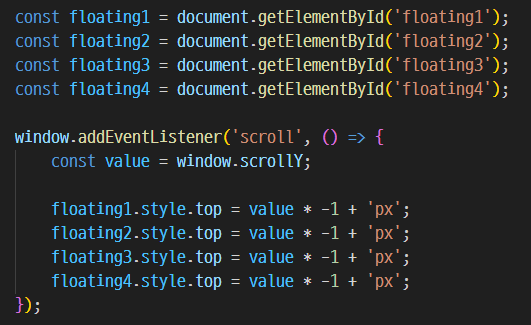
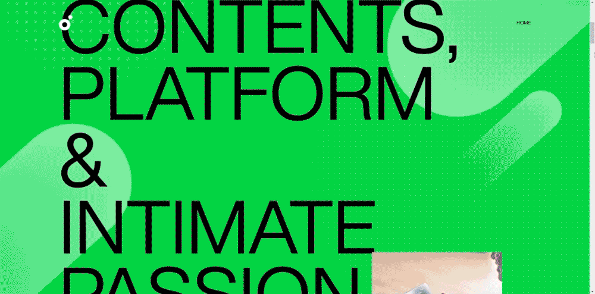
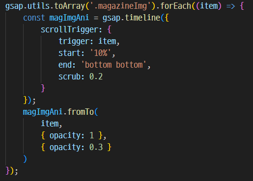

Situation ❓
- • 멜론의 20주년을 기념하기 위한 프로모션 페이지 제작
Task 🚩
- • GSAP, javascript, jquery 를 활용한 다양한 효과 사용법 익히기
- • '기념'과 '축하'의 분위기가 확실히 드러날 것
- • 스토리의 흐름이 자연스러울 것
Problem 🔍
- • 프로모션 페이지에도 스토리가 필요하다! 자연스러운 흐름을 어떻게 이어갈 것인가?
- 멜론의 브랜딩 키워드를 강조하며 시작
- 🔻
- 멜론의 '20년'을 사용자와 관련지어 내용 전개
- 🔻
- 감사와 미래를 기약하는 희망적인 메세지 전달
- 🔻
- 뮤직 빅데이터 분석 콘텐츠 '데이터랩(Data Lab)'을 활용한 20주년 기념 매거진 소개
- 🔻
- 멜론 메인 이동 및 기타 SNS 포털
StyleGuide 📄
KEYWORD
- # 깔끔한
- # 현대적인
- # 그라디언트
COLOR
- BLACK
- WHITE
- #00D344
- #e635a2
FONT
- NotoSans
KR - HelveticaNow
Display
Issue & Resolving 💣
- 1. 스크롤을 내릴 때, 이미지가 떠오르듯 Y스크롤 반대로 올라가는 효과 어떻게 구현할까?
- -> const로 이미지를 하나씩 상수 선언 후, window.addEventListener() 메서드에
scroll을 입력한다.
스크롤 할 때 이 동작(함수)이 실행된다는 의미이다. - -> window.scrollY를 상수 선언한다.
- -> 앞서 선언한 이미지 상수 뒤에 .style.top (top에 style을 추가한다는 의미) 를 입력하고 스크롤Y을 내릴 때 올라갈 값을 입력해준다. * 위로 올라가려면 음수, 내려가려면 양수를 입력한다.
- 
×

- 2. 스크롤을 내릴 때 , 지나간 이미지는 어두워지는 애니메이션 효과는 어떻게 구현할까?
- * gsap 를 사용했다.
- -> gsap 스크립트를 모두 연결해준뒤 배열 메서드 toArry와 인덱스 실행 메서드 forEach도 함께 작성한다. 배열 메서드에서 생성된 인덱스 번호를 차례대로 실행한다는 의미이다.
- -> 연속적으로 애니메이션이 실행되어야 하기 때문에 타임라인을 생성하고 그것을 상수로 선언한다.
- -> 이미지를 조금만 지나쳐도 어두워지는 효과가 적용되게끔 start의 지점을 10%로 설정했다.
- -> 타임라인 스크롤 트리거 상수에 fromTo 메서드를 작성한다. 타임라인에 타겟(item)을 입력하고, {시작 점}과 {끝나는 점}에 적용할 효과를 작성한다. * 투명도를 낮춰 어두워 보이게 한다.
- -> 10% 지점에서 opacity 1로 시작해서 bottom bottom 지점에서 opacty 0.3으로 끝난다는 의미이다.
- 
×

Review ✏️
😓 아쉬운 점
- • 자바스크립트 명령어에 대한 이해가 부족하여 허비한 시간이 많았다.
- • 화면이 전환될 때 실행되는 애니메이션 효과가 다소 부자연스럽다.
- • 20년이라는 시간치고는 전개된 스토리가 부실했던 것 같다. 또한 분위기가 고조되며 임팩트가 있어야 할 구간이 부족하다고 느꼈다.
👏 성과
- • 자바스크립트 명령어, 메서드에 대한 이해도 증가
- • GSAP 숙련도 증가